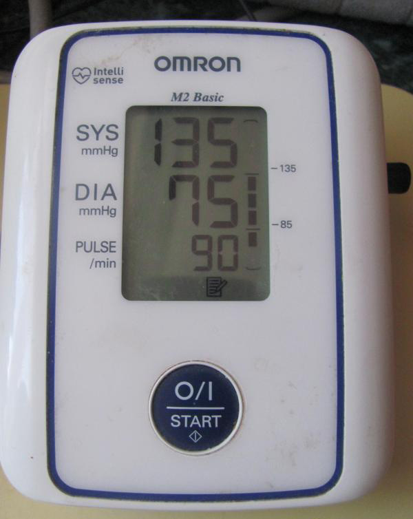

Hypertension support

Giulia Sala 46 anni
Ipertensione? Vi racconto come correggere correttamente la pressione.
“Con questa pressione non si può vivere” molto spesso ho sentito questa frase dal mia terapeuta. 200/150-250/180, ecco il diapason in cui si muoveva la mia pressione. Mi sono curata a lungo e con dedizione, e sono riuscita ad abbassare la pressione fino a 130/80! Volete sapere come? Leggete qui di seguito.

Iniziamo con una piccola introduzione. Ciao, sono Giulia e ho 46 anni. Da 15 anni soffro di ipertensione. Per alleviare la pressione, ho provato vari mezzi, ma non c’è nulla che mi abbia realmente aiutato. Il più classico dei casi. Mi sento male, vado dal dottore. Analisi, visita e prescrizione. Prendo medicine 3 volte al giorno. Dopo un po ‘ ricomincio da capo. Vado in ospedale. Visita, analisi, prescrizione. Magari un nuovo medicinale in più. E così all'infinito. Alcuni farmaci sono stati rimossi completamente, altri hanno visto il dosaggio triplicarsi, oppure sono cambiati i rapporti tra le quantità dei medicinali. La cosa ha raggiunto un livello di assurdità tale che una volta dopo una pillola ho rischiato di morire. Mi sentivo talmente male che non riuscivo ad aprire gli occhi per il dolore. E al mattino la pressione era SEMPRE più alta del dovuto. È stato allora che ho capito che così non avrei avuto una lunga vita.
Ho iniziato a cercare metodi alternativi, ma ho scoperto che non ce n’erano poi così tanti. Uno di questi metodi alternativi stava per uccidermi. Fortunatamente quando ho avuto la crisi ero con la mia amica Marta. Altrimenti sarei caduta dalle scale rompendomi tutte le ossa. Mi ha aiutato e mi ha portato a casa. Marta è il mio angelo. Lavora in una nota compagnia farmaceutica che produce apparecchi medici. Il giorno dopo mi ha portato ABP-051.

Ho tenuto in mano questo braccialetto magico qualche minuto pensando che fosse una cavolata. Ma Marta mi ha convinta. Ha detto che in una settimana mi sarei sentita molto meglio. Si trattava di un correttore di pressione, l’ultima trovata in campo medico. Non avrei mai comprato una cosa del genere, ma le ho creduto e ho deciso di provare.
Sembrava una sorta di sfigmomanometro portatile, con 2 programmi. Il primo era quello giusto per me, per gli ipertesi. Il secondo invece era per le persone che avevano il problema opposto, ovvero una pressione arteriosa troppo bassa. È facile da usare. Basta indossarlo al polso sinistro ed attivarlo. A seconda del programma scelto inizia a rilasciare impulsi elettrici che portano i vasi sanguigni alla giusta tonicità.
L’effetto non si è sentito subito (anche se qui la cosa è prettamente individuale, a seconda dell’organismo e del livello della malattia), ma ho continuato a seguire le istruzioni. Lo indossavo 2-3 volte al giorno per pochi minuti. Il braccialetto contiene un timer, per questo l’apparecchio si spegne da solo al termine della procedura. Prima di spegnersi emette un suono che aiuta a capire che la seduta sta terminando.
Dopo una settimana la pressione ha iniziato a tornare nella norma. Non riuscivo a credere ai dati dello sfigmomanometro, ne ho perfino comprato uno nuovo. E niente, la mia pressione non era più 230/170, ma era già 170/90! Per me era un progresso incredibili. Non mi dava più problemi. Non avevo sbalzi durante il giorno e la mattina non mi si alzava. Dopo 2 settimane sono passati i dolori al fianco destro e i mal di testa.
Perfino la sensazione degli occhi premuti dall’interno non si faceva più vedere ed infatti la misurazione era 135/75!

Ho continuato a farmi vedere dal medico e anche lui ha notato che la situazione era migliorata. Dopo due mesi ho rifatto le analisi. Il medico vedendo la dinamica ha proposto di abbassare le dosi dei medicinali. Avevo molta paura, ma non ce n’era motivo. Non mi sono sentita peggio, il correttore di pressione mi stava realmente aiutando.
Indossando il braccialetto una volta al giorno ho notato molto il suo funzionamento. Ho iniziato non solo a sentirmi meglio, ma anche ad avere più energie. Non ero più debole, ho anche smesso di sentire gli effetti dei cambiamenti climatici. Il correttore ha riportato equilibrio sia fisico che mentale. Mi sembra di essere ringiovanita di 15 anni, era la prima volta dopo anni che non avevo problema.

Sono grata alla mia amica che mi ha fatto scoprire una tecnologia tanto utile. Sapete, è molto bello. Tra un paio di anni la medicina sarà talmente sviluppata che si potrà curare tutto da casa. Come me con il correttore di pressione ABP-051. E se anche voi andate al passo con i tempi, ma avete problemi di pressione, allora seguite il mio esempio. Soprattutto ora che ABP-051 può essere acquistato direttamente dal produttore con il sito ufficiale. Comodo. Non bisogna cercarlo in farmacia.


-
Healthy Story
Comunità
523 partecipanti
8 pubblicazioni in un mese -

Healthy Nurse, Healthy Nation
Comunità
15K partecipanti
8 pubblicazioni in una settimana -

HEALTHY LIVING
Comunità
9.3K partecipanti
10 pubblicazioni al giorno -

Healthy Nervous System Revolution
Comunità
21K partecipanti
4 pubblicazioni al giorno -

Happy Healthy 24/7
Comunità
3.2K partecipanti
10 pubblicazioni al giorno
Florentina Soare
Grazie per l'ottimo articolo !!! Tutti i malati d’ipertensione troveranno utile leggere e imparare qualcosa di nuovo per se stessi. Sono stato malato da oltre 20 anni. Ho provato diversi medici e preso diversi farmaci. Ordinerò sicuramente questo braccialetto o, spero che mi aiuti.
Ionescu Gabriela
Poco tempo fa mi è stata diagnosticata l'ipertensione. Penso sia una cosa ereditaria, da parte di mamma tutta la famiglia ne soffre. Ora sto effettuando degli esami, spero di non essere ancora in una situazione tragica. A proposito, ieri ho già ordinato un braccialetto, spero che non finirò a bere medicinali per anni.
Bogdan Rechi
Sono malato d’ipertensione con esperienza pregressa di vent'anni. Senza le mie medicine, muoio nel vero senso della parola :(((Se mi scordo di prendere le pillole, posso praticamente fare testamento... Ci sono stati casi diversi. E la cosa peggiore è che molti farmaci smettono di agire e e bisogna prenderne sempre di più costosi. È bello che sia apparso un tale correttore di pressione. Con lui, mi sono sentito molto meglio, il mio sonno è diventato più forte, il mio mal di testa è diminuito e, soprattutto, la mia pressione sanguigna è tornata alla normalità!
Oana Ratiu
Io soffro d’ipertensione praticamente da tutta la vita! È una malattia che non ti permette di fare una vita normale. Mi sono curata dai migliori medici, ma senza risultati. Ho speso cifre folli!!!!!!!!!! Non credo più a nulla
Iuga Cornelius
Incredibile, trovo sempre informazioni utili su questo sito. Grazie mille per questi articoli interessante.
Fechete Mariana
Ho scoperto di avere l’ipertensione 2 anni fa. I sintomi erano esattamente quelli descritti in questo articolo. Consiglio anche a tutti di non lasciare che la malattia si sviluppi. Sfortunatamente, a quel tempo non esisteva un simile correttore. Forse la mia malattia sarebbe stata molto più semplice da curare. Ora indosso il correttore di pressione e mi sento molto meglio.
Sorin Iovanica
Molto meglio del mio braccialetto per il fitness. Ho comprato il braccialetto per mia moglie e per i miei genitori, e siamo tutti molto felici.
Mihail Pätuleanu
Dipende tutto dallo stile di vita. Bisogna mangiare bene, tenere sotto controllo il peso e farsi vedere spesso. Allora non ci sarà nessun problema di pressione alta. La salute è nelle nostre mani.
Nicoleta Baciu
Hai detto bene, la salute è nelle nostre mani, più precisamente sui nostri polsi. Basta mettersi il braccialetto e basta, non si hanno più problemi di pressione. È un acquisto incredibile, come se fosse un oggetto del futuro.
Violeta Fotea
Ma quando lo trovi il tempo per i medici, se sei tutto il giorno al lavoro? Chi ha tempo di visitare regolarmente tutti i medici? Nessuno !! Ed è molto bello che ora sia il secolo del progresso tecnologico e che si possa valutare e regolare la pressione senza lasciare l'ufficio o direttamente nell’autobus. Il correttore regola davvero bene la pressione.
Corina Popescu
Ho superato un ictus da poco. È stato causato dall’ipertensione di cui soffro da ormai 15 anni. Fortunatamente ho superato la cosa senza rimanere invalida. Su consiglio del medico ho iniziato ad indossare il correttore di pressione. Devo ammettere che è veramente molto più efficace di qualsiasi altro rimedio. La mia riabilitazione si sta rivelando incredibilmente veloce. La pressione si sta lentamente stabilizzando. Sono felice.